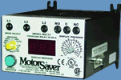
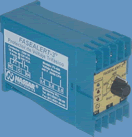

| |
PROTECCIONES PARA MOTORES |
"PROTECTOR 201" vs falla de fase, desbalance, etc.
para motores trifásicos 220/440v (MS 201): |
| Características: |
| - Protege cualquier motor trifásico sin importar su tamaño. |
| - Rango de Voltajes: 190 a 480 Volts. |
| - Ideal para espacios reducidos. |
| - Incluye retardo en disparo para impedir falsos disparos. |
|
| |
| - Pérdida de Fase. |
| - Bajo Voltaje. |
| - Secuencia de fase inversa. |
| - Desbalance en voltaje. |
|
| Certificación UL |
|
| Incluye base octal para montaje en riel DIN. |
|
Modelo |
Descripción |
MS 201 |
"PROTECTOR 201" para motores trifásicos en 220 y 440 v (Falla
de fase, Desbalance de voltaje, bajo voltaje, secuencia inversa de fase).
|
|
|
|
| |
"PROTECTOR DE LUJO 777" para motores trifásicos (MS 777): |
| Características: |
| - Programable. |
| - Certificación UL y cUL. |
| - Restablecimiento automático y manual. |
| - Candado. |
| - Puerto de comunicación RS485. |
| - Montaje en sub-panel (atornillable). |
| - Opcional: montaje en riel DIN. |
| - Memoria de última falla. |
|
|
| - Sobrecarga y Baja Carga. |
| - Pérdida de Fase. |
| - Atascamientos. |
| - Bajo Voltaje y Alto Voltaje. |
| - Pérdida de fase. |
| - Desbalance en voltaje y corriente. |
| - Falla a tierra. |
| - Ciclos rápidos. |
- Secuencia de fases.
|
|
|
|  |
Motor Saver Mod. 777 |
5 años de garantía |
|
|
Modelo |
Descripción |
MS 777 |
"PROTECTOR DE LUJO 777" para motores trifásicos |
|
|
|
| |
Protección de bombas con motor monofásico, vs trabajo en
seco, sobrecarga, etc. :
MS 111 (115 volts) y MS 233 (230 volts): |
| Alto y Bajo voltaje |
Baja Carga: Trabajo en seco (abatimiento), flecha rota, etc. |
|
| Ciclos rápidos: excesivos arranques. |
Sobrecarga: alto amperaje, bloqueo, etc. |
Modelo |
Descripción |
|
Para bombas con motor monofásico en 115 volts , de 1/3 a 1 HP en 115 V (c.a)
|
MS 233 |
Para bombas con motor monofásico en 220 volts , de 1/3 a 3 HP en 220 V (c.a) |
|
|
| |
MODELOS FASEALERT-3 |
Protege motores trifásicos contra fallas debidas a:
BAJO VOLTAJE : Cuando cualquiera de los tres voltajes bajan más de un 10% del nominal
FALLA DE FASE: Cuando falla una fase, se incrementa mucho la corriente.
DESBALANCE de voltaje: Cuando el voltaje de una línea es menor o mayor al promedio de las tres.
En estos casos se genera ALTA VIBRACIÓN Y SOBRECALENTAMIENTO.
CICLO RÁPIDO: Cuando ocurren frecuentes conexiones y desconexiones en periodos muy cortos.
SECUENCIAS DE FASES: Cuando se invierten dos líneas, ocasiona giro en sentido contrario. Retardo al conectar: cinco minutos |
| Modelo |
Voltaje |
Tiempos de Desconexión |
Por desbalance |
Por falla de fase |
Por bajo Voltaje |
F3-220 |
220 Volts +-10% |
5 Segundos |
5 Segundos |
10 Segundos |
F3-440 |
440 Volts +- 10% |
5 Segundos |
5 Segundos |
10 Segundos |
|
 |
|
Protección de bombas con motor monofásico contra:
|
1. Abatimiento o baja carga (Bajo nivel de agua en pozo o cisterna, desconecta en 5 segundos).
2. Bajo voltaje (Desconexión en 5 segundos).
3. Ciclo rápido (Desconecta cuando ocurren más de cuatro arranques en un minuto).
4. Sobrecarga(Desconecta en rango de 5 a 20 segundos dependiendo de la sobrecarga, 150% - 25% respectivamente). |
| Modelo |
Voltaje |
Amperaje |
Desconexión por baja carga |
Desconexión por sobrecarga |
|
|
|
70% de los watts nominales (5 seg)
|
|
|
|
|
70% de los watts nominales (5 seg)
|
|
PM-220-50A |
220 V |
16 a 50 amp |
70% de los watts nominales (5 seg) |
25% a 150% (20 a 5 seg) |
|
|
|
| |
|
|
ELECTRONIVELES CON ELECTRODOS |
ELECTRONIVEL ALTAMIRA |
- Para control de vaciado y/o llenado de cisterna , tanque elevado, etc.
- Para desconexión automática de la bomba en caso de falta de agua.
-
Unidad montada en gabinete plástico a prueba de intemperie, con tapa transparente.
- Módulo de control con interruptor selector y señalizaciones visuales.
** Incluye seis (6) unidades de ELECTRODOS para ambas funciones (vaciado y llenado) con cubierta plástica.
- Puede operar directamente motores monofásicos de hasta 1 HP en 127 volts y motores monofásicos de hasta 2 HP en 220 volts.
- También puede operar motores trifásicos por medio de un contactor.
-
Alta Calidad.
- Sirve para operar:
• Sistema de vaciado y llenado.
• Llenado de tinaco o depósito con protección por bajo nivel.
• Protección por bajo nivel en Sistemas de Presión o Hidroneumáticos. |
| Modelo |
Clave |
Voltaje |
Descripción |
| LN5M |
ENA-1F127 |
127 Volts 1F |
Electronivel 127 Volts 1 Fase. Arranque directo a motor hasta 1 HP. |
| LN5-200D |
ENA-1F220 |
220 Volts 1F |
Electronivel en 220 Volts 1 Fase. Arranque directo a motor hasta 2 HP.
|
| LN5X-D |
ENA-3F220 |
220 Volts 3F |
Electronivel en 220 Volts 3 Fases. Arrancador externo. (Contactor) |
| LN5X-R |
ENA-3F127 |
127 Volts |
Electronivel en 127 Volts 3 Fases.Arrancador externo. (Contactor) |
|
|
|
| |
|
|
También se puede utilizar como control de VACIADO - LLENADO |
Se utiliza cuando se desea proteger la bomba sumergible contra abatimiento del nivel de agua en el pozo.
Cuando se desea que la bomba vacíe automáticamente un depósito y/o llene automáticamente otro depósito.
Se utiliza frecuentemente para mantener lleno un depósito y evitar que la bomba arranque cuando la cisterna esté vacía o el pozo abatido.
** Incluyen los tres electrodos de bronce |
Modelo |
|
Descripción |
VL/120E |
120 Volts |
Electronivel con función de Vaciado y Llenado en 120 Volts. |
VL/220E |
220 Volts |
Electronivel con función de Vaciado y Llenado en 220 Volts. |
VL/440E |
440 Volts |
Electronivel con función de Vaciado y Llenado en 440 Volts. |
|
|
|
| |
|
|